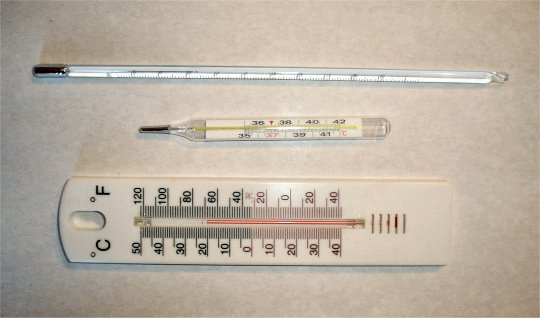
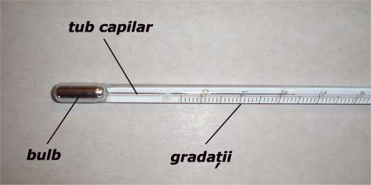
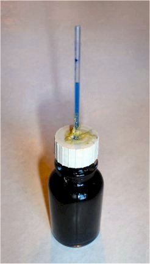

Elemente de termodinamică. Cald şi rece
A-2. Termometrul
 Activitatea experimentală 2-1
Activitatea experimentală 2-1
Foloseşte un termometru pentru a afla cât de cald este un corp. Lucrează în echipă.
Pasul 1. Imersaţi un termometru cu lichid în apa din borcanul din mijloc. Observaţi ce se întâmplă cu
coloana de lichid din termometru. Când nivelul coloanei se stabilizează, notaţi indicaţia termometrului.
Pasul 2. Repetaţi aceeaşi procedură şi pentru apa din celelalte borcane.
Pasul 3. Comparaţi indicaţiile termometrelor pentru apa din fiecare dintre cele trei borcane. Sunt aceste
indicaţii în acord cu cât de caldă este apa din borcanele respective?
Indicaţiile unui termometru sunt în acord cu cât de cald este un corp. Coloana de lichid se alungeşte atunci când
termometrul este imersat în apă mai caldă şi se scurtează în apă mai rece.
Lungimea coloanei de lichid este reperată pe o scală gradată. Numărul de grade indicat de coloana de lichid este o măsură
a gradului de încălzire a lichidului din termometru.
Ne putem încrede mai mult în indicaţiile unui termometru decât în propriile simţuri!
 Provocarea 2-1
Provocarea 2-1
Observă un termometru de cameră, unul medical şi unul de laborator, asemenea celor din figura 2-1.

Figura 2-1. Diferite tipuri de termometre cu lichid.
Identifică asemănările şi deosebirile dintre aceste termometre!
Un termometru cu lichid conţine o cantitate mică de lichid închisă într-un bulb continuat cu un tub subţire, închis
(tubul capilar), ca în figura 2-2.

Figura 2-2. Termometrul cu lichid
Termometrele utilizate în ţările europene sunt de obicei gradate în grade Celsius (notate °C).
Forma termometrului, dimensiunile sale şi natura lichidului diferă de la un termometru la altul. Însă indicaţiile
termometrelor gradate corect trebuie să fie cât mai apropiate atunci când termometrele se află în condiţii identice! Altfel,
indicaţiile acestora nu ne-ar fi de prea mare folos.
Activitatea experimentală 2-2
Compară indicaţiile unor termometre diferite puse în condiţii identice. Lucrează împreună cu colegii tăi.
Pasul 1. Preparaţi apă caldă într-un borcan, astfel ca un termometru de laborator cufundat în apă să indice
40 °C. Agitaţi continuu apa din borcan cu ajutorul unei baghete, pentru a uniformiza încălzirea acesteia.
Pasul 2. Imersaţi în apa din borcan un termometru medical şi unul de cameră. Agitaţi continuu apa şi
aşteptaţi ca lungimile coloanelor de lichid să se stabilizeze. Observaţi indicaţiile termometrelor.
O eroare de un grad Celsius este acceptabilă pentru un termometru de cameră, dar în cazul unui termometru medical sau al
unuia de laborator, chiar şi o zecime de grad Celsius contează!
Activitatea experimentală 2-3
Construieşte un termometru cu lichid, din lucruri la îndemână, asemenea celui din figura 2-3. Lucrează în echipă.
 Figura 2-2. Termometrul cu lichid
Pasul 1. Recuperaţi o sticluţă cu capac filetat (din cele în care se îmbuteliază esenţe alimentare) şi o
rezervă de pix transparentă, epuizată.
Pasul 2. Perforaţi capacul cu vârful unui compas şi lărgiţi orificiul atât cât să pătrundă rezerva de pix.
Etanşaţi cu adeziv îmbinarea dintre rezerva de pix şi capac.
Pasul 3. Umpleţi sticluţa cu apă colorată cu puţină cerneală sau colorant alimentar. Asiguraţi-vă că nu mai
există aer în sticluţă (lichidul este până la margini). Înşurubaţi capacul.
Pasul 4. Confecţionaţi o scală gradată lipind o fâşie de hârtie milimetrică pe o fâşie de carton. Numerotaţi
diviziunile de 1 cm de pe fâşia de hârtie milimetrică, începând cu 0 la un capăt al fâşiei. Fixaţi scala pe tubul
rezervei de pix cu bandă adezivă transparentă. Termometrul este gata!
Pasul 5. Comparaţi indicaţiile termometrului realizat de voi cu cele ale unui termometru de cameră, punând
cele două termometre în condiţii identice. Câte grade Celsius corespund fiecărui mm de pe scala termometrului
realizat de voi?
Lichidul din termometru se dilată când devine mai cald şi avansează în lungul tubului transparent. Tubul fiind subţire, chiar
şi o mică variaţie a volumului lichidului din sticluţă poate fi observată printr-o modificare considerabilă a lungimii
coloanei de lichid din tub.
Oare de ce se dilată lichidul atunci când acesta devine mai cald? Ce se întâmplă de fapt când lichidul este încălzit? Şi de ce
oare stropii de cerneală pe care i-ai turnat în apă se împrăştie până când lichidul capătă o nuanţă uniformă
Răspunsul la astfel de întrebări se află ascuns adânc în interiorul corpurilor, la un nivel al detaliilor care scapă
privirii noastre!